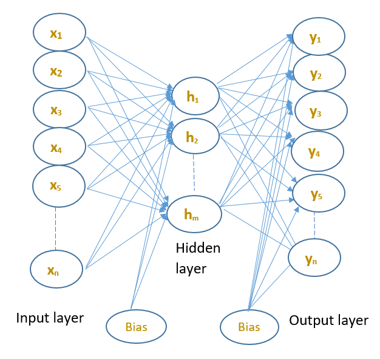
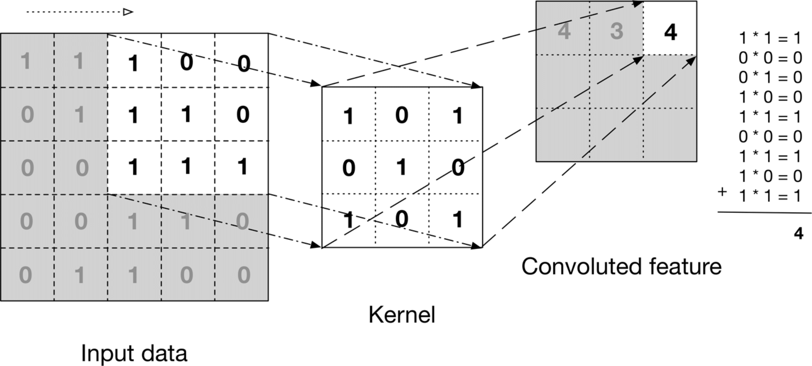
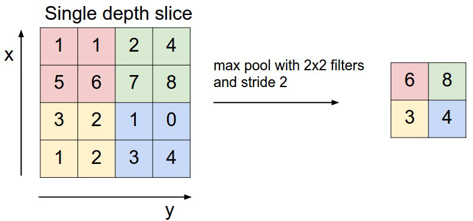
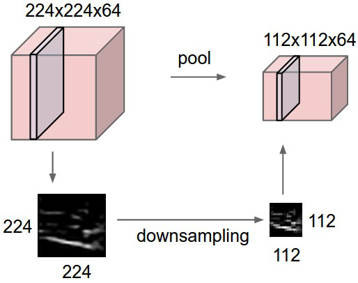
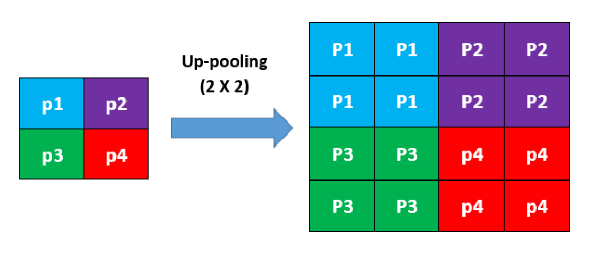

Autoencoders
- In this section, we will discuss about :
- Fundamental Autoencoder
- Convolutional Autoencoder
- Convolutional layers
- Max-pooling layers
- Up-pooling layers
- Convolutional layers
- Max-pooling layers
- Up-pooling layers
Autoencoder
Fundamental autoencoder
An autoencoder is an unsupervised learning algorithm, which takes an unlabeled training data as an input and re-generates the input data as an output data. A two-layer autoencoder is shown in Figure below. An input data ($n$-dimensional vector), $\mathbf{x}=[x_1,x_2,x_3,x_4,x_5,......,x_n]^T$ is mapping to output layer values $\mathbf{y}=[y_1,y_2,y_3,y_4,y_5,......,y_n]^T$ through a hidden layer space representation, where $\mathbf{y} \approx \mathbf{x}.$
Figure : An architecture of a fundamental autoencoder with a hidden layer and an output layer.
An autoencoder has two main parts, one is the encoder part, which projects the input data to the internal hidden layer space, i.e., which encodes a higher dimensional data into lower dimensions. The second part is the decoder, which tries to reconstruct the original dimension from the encoded dimension. The encoder part gives the inherent information of the data which can be very useful for various applications.
All the hidden layer and output layer neurons have the same working principle as described in Section \ref{sec_artificial_neuron}. The training process is simply minimizing the cost function using the backpropagation algorithm, as discussed in Section \ref{backpropagation_algorithm}.
If the number of hidden neurons are equal to the number of input neurons, then the network fails to extract the useful hidden pattern of the data points.
By assigning the constraints on the number of hidden neurons of the hidden layer, e.g., if the number of hidden neurons are less than the number of inputs.
Then it might be possible to discover the hidden useful patterns of the data
(Andrew_ng).
Convolutional autoencoder
Convolutional autoencoder (CAE) is very similar to the fundamental autoencoders except that an input of the CAE is an image. In CAE, there are two basic types of layers in the architecture:Convolutional layers
The purpose of the convolutional layer is to extract the features from the input images. In a fundamental neural network, the input image is stretched into a form of a vector and that vector is fed to the network. In this process the spatial relationship between the pixels is not preserved. In the convolutional layer based neural network, the input image is filtered by a kernel. The kernel is slid across the height and width of the input image, which will produce a convoluted feature of the input image, as shown in Figure \ref{conv_process}. This convoluted feature is called as an activation map or a feature map. So, the feature map is the response of the kernel at every spatial position of an input image \cite{andrej_karapathy}. In this way, the convolutional based neural network can preserve the spatial relationship between the pixels, which is considered as one of the significant reasons of being success in computer vision.
Figure : Illustration of convolution process \cite{oreilly}.
In the convolutional layer, multiple filters are applied to learn the different feature detector filters. In training, it is important to set the filter's value randomly to prevent the filters from learning the same parameters. The number of the filters in a convolutional layer represents the number of feature maps in that layer.
Max-pooling layers
Max-pooling layers are also another key part in the CAE to speed up the computation and learn more robust representations of the features. This operation is introduced in the network to control overfitting as well \cite{andrej_karapathy}. There are few types of pooling operations depending on the operation procedure. In max-pooling, the maximum number of the filter regions are chosen as the output of the pooling operation. That is why, it is termed as a max-pooling operation (illustrated in Figure \ref{max_pool_process_basic}). Max-pooling has mainly two hyperparameters, filter size $F$ and stride Note {Definition of Stride: The number of pixels will be skipped by the filter after each max-pooling operation.} $S$, but none of these hyperparameters are learned or tuned during the backpropagation. These are pre-defined hyperparameters when the network architecture is designed. After the max-pooling operation the size of the input image will be reduced depending on the filter size $F$ and stride $S$. The size of the reduced dimension can be calculated as follows: \begin{equation} size_{reduced}=\big(\frac{H-F}{S}+1\big) \label{eqn_max_pool} \end{equation} Where $H$ is the height or width of the input image.
Figure : Max-pooling process for a single depth slice for $F=2 \times 2$ and $S=2$ \cite{andrej_karapathy}
In Figure \ref{max_pool_process_basic}, a $4 \times 4 $ size single depth slice and a $2 \times 2$ size filter have been used to do the max-pooling operation. It can be observed in the upper left block $max(1,1,5,6)=6$, hence we get $6$ in the output. Max-pooling works on the channels independently or separately, if there are multiple channels, it will work on all the channels separately. As a consequence, the depth of the input image data will not be changed after max-pooling layer (shown in Figure \ref{cmax_pool_cnn_Arch}). In Figure \ref{cmax_pool_cnn_Arch}, the input data size is $[224\times 224\times 64]$. So, if the filter size $F$ is $2\times2$ and stride $S$ is $2$, then the output size will be $[112\times112\times64]$, since $\big(\frac{224-2}{2}+1\big)=112$ (using Equation \ref{eqn_max_pool}).

Figure : Operation of a max-pooling layer in a CNN architecture \cite{andrej_karapathy}. Note that the max-pooling has no effect on the depth (depth$=64$ in this example) of the input data.
Up-pooling layers
Up-pooling layers increase the dimensions of an image. There are many techniques to increase the dimensions, such as nearest-neighbor interpolation, bilinear interpolation, bicubic interpolation, etc. In this work, the nearest-neighbor interpolation has been used in the Up-pooling layers of the proposed convolutional autoencoder. The idea of this approach is to copy the value from the nearest pixel, it does not take into account all the neighboring pixels. This idea is graphically demonstrated in Figure below. The height and the width of an image of size $2\times2$ pixels is increased by a factor of 2.
Figure : Illustration of the up-pooling operation. Each pixel value is repeated in rows and columns by a factor of $2$.